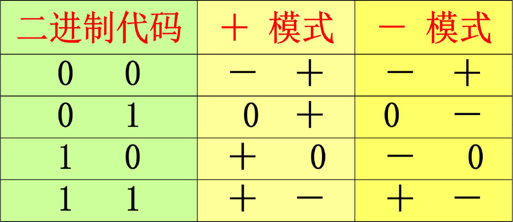
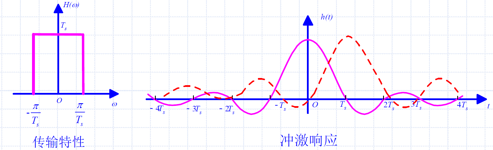
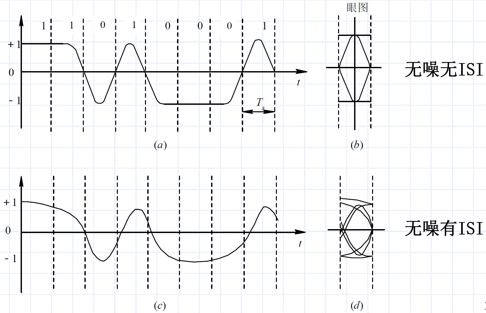

6 数字基带传输
6.0 引言
数字基带信号：指占据的频谱从零频或很低频率开始的数字基带信号
数字基带传输系统：在某些具有低通特性的有线信道中，特别是在传输距离不太远时，基带信号能够不经载波调制而直接进行传输，这类系统称为数字基带传输系统
数字带通传输系统：包括调制和解调过程的传输系统称为数字带通传输系统
6.1 数字基带信号及其频谱特性
6.1.1 数字基带信号的传输模型
数字基带信号的传输模型：
- 模型中不包含调制解调装置
- 在信道中直接传输数字基带信号
- 原始基带信号：适合于信道传输的基带信号
- 信道信号形成器（发送滤波器）：用于压缩输入信号频带将传输码变换为适于信道传输的基带信号波形
- 信道：给基带信号提供传输通道，一般会引起传输波形的失真
- 接收滤波器：滤除带外噪声，对信道特性均衡，便于抽样判决
- 抽样判决器：对接收滤波器的输出波形进行抽样判决，以确定发送序列
- 定时脉冲、同步提取：提取用于抽样的位定时脉冲
数字基带信号：
- 原理上数字信息可以表示成一个数字序列
- 数字基带信号是表示数字信息的电波形，可以用很多不同的电平或脉冲表示
基本基带信号波形（以矩形脉冲为例）：
- 单极性波形：
- 代码1（0）使用持续一个码元时间的高（低）电平表示
- 特点：不适合有交流耦合的远距离传输，只适用于计算机内部或极近距离传输
- 双极性波形：
- 代码1（0）使用持续一个码元时间的正（负）电平表示
- 特点：当1和0等概时无直流分量，有利于在信道中传输；判决电平为0
- 单极性归零波形：
- 代码1（0）使用持续时间小于一个码元时间的高（低）电平表示
- 通常归零波形（RZ）使用半占空码
- 特点：可以直接提取定时信息，是其他码型提取同步信息时常用的过渡波形
- 双极性归零波形：
- 代码1（0）使用持续时间小于一个码元时间的正（负）电平表示
- 通常归零波形（RZ）使用半占空码
- 特点：兼有双极性和归零波形的特点
- 差分波形（相对码波形）：
- 代码1（0）相邻码元电平有（无）跃变
- 特点：可以消除设备初始状态的影响，特别是相位调制系统中可以解决载波相位模糊的问题
- 多电平波形：
- 代码00、01、10、11使用电平+3E、+E、-E、-3E持续一个码元时间表示
- 特点：一个脉冲对应多个二进制码，在波特率（传输带宽）相同时比特率提高，因此在频带受限的环境中广泛应用
归零波形RZ & 非归零波形NRZ：通常归零波形（RZ）使用半占空码
6.1.2 基带信号的频谱特性
数字基带信号是随机信号，需要从功率谱密度了解其频域特性
- 通过频域特性确定：
- 数字基带信号带宽
- 序列中是否含有直流和位定时分量\(f_s=\frac{1}{T_s}\)
获取数字信号功率谱密度的方法：
- 若数字基带信号是广义平稳的二阶矩过程，求相关函数，利用相关函数与功率密度之间的关系获取信号的功率谱密度
- 从随机过程功率谱密度定义出发，求功率谱密度的数学表示
功率谱密度：\(s(t)\)为原始信号，\(v(t)\)为稳态信号，\(u(t)\)为交变信号
- \(v(t)=\sum_{n=-\infty}^{+\infty}[Pg_1(t-nT_B)+(1-P)g_2(t-nT_B)]=\sum_{n=-\infty}^{+\infty}v_n(t)\)
- \(u(t)=a_n[g_1(t-nT_B)-g_2(t-nT_B)]\)
- \(a_n=\begin{cases}1-P & 以概率P \\ -P & 以概率(1-P)\end{cases}\)
- \(v(t)\)的功率谱密度\(P_v(f)\)：\(P_v(f)=\sum_{m=-\infty}^{\infty}|f_B[PG_1(mf_B)+(1-P)G_2(mf_B)]|^2\delta (f-mf_B)\)
- 离散谱；根据离散谱能够确定随机序列中是否包含直流分量（m=0）和定时分量（m=1）
- \(u(t)\)的功率谱密度\(P_u(f)\)：\(P_u(f)=\lim_{N\rightarrow \infty}\frac{(2N+1)P(1-P)|G_1(f)-G_2(f)|^2}{(2N+1)T_s}=f_sP(1-P)|G_1(f)-G_2(f)|^2\)
- 连续谱；根据连续谱能够确定随机序列的带宽
- \(s(t)\)的功率谱密度：
- 二进制随机序列双边功率谱密度：\(P_s(f)=P_u(f)+P_v(f)=\cdots\)
- 单边功率谱密度：\(P_s(f)=2f_BP(1-P)|G_1(f)-G_2(f)|^2+f_B^2|PG_1(0)+(1-P)G_2(0)|^2\delta(f)+2f_s^2\sum_{m=1}^{\infty}|PG_1(mf_B)+(1-P)G_2(mf_B)|^2\delta(f-mf_B)\)
6.2 基带传输的常用码型
信源输出的原始消息代码直接形成简单的基带信号，一般含有丰富的低频分量或直流分量。在基带信道中传输损耗大，失真严重，因此在基带系统中收发两端引入码型变换和反变换。
传输码（线路码）：为了便于基带信道中传输，对信源输出的代码进行的编码
- 使信源产生的基带信号功率谱密度形状更适合于信道传输
码型变换：原始代码到传输码的变换，目的是使基带信号的功率谱密度适应基带传输系统的需求
- 信源编码：降低信源输出信息的冗余度，提高信息的有效性
- 信道编码：增加发送消息的冗余度，提高信息传输的可靠性
传输码的码型选择：
- 功率谱：不含直流，低频分量少，功率谱主瓣宽度窄节省传输频带
- 定时：含有丰富的定时信息，便于提取定时信号
- 透明性：不受信息员统计特性的影响，能适应信息源的变化
- 性能监测：具有内在的检错能力
- 传输可靠性：给定传输条件下，线路码应使系统差错概率尽可能小
- 设备复杂度：编码、译码简单，降低通信延时和成本
对传输用的基带信号主要要求如下：
- 对码元的要求：原始消息码元必须编成适合于传输的码型
- 对所选码型的电波形要求，电波形应适合于基带系统的传输
AMI码（传号交替反转码）：
- 编码规则
- 代码1交替变换为+1和-1
- 代码0保持不变
- 特点：
- 改变信号功率谱密度形状，无直流
- 编译码简单
- 便于观察误码
- 出现长连0码时不利于提取定时信息
HDB3码（三阶高密度双极性码）：
- 编码规则：
- 按AMI码的规则编码
- 连续0个数不超过3，AMI就是HDB3码
- 若出现连续4个0，用000V代替0000，破坏符号V的极性与前一个非0符号极性相同，且V码极性交替
- 相邻的V码极性必须交替。若V码能够满足上一条件，但不能满足极性交替时，用B00V取代后一个0000，B和V极性一致
- V码后面的传号码极性也要交替
- V码与B码：
- V码（破坏脉冲）：将连续0个数减少到不超过3个
- B码（调节脉冲）：保证V码极性交替，消除直流
- 特点：
- 改变信号功率谱密度形状，无直流
- 译码简单
- 有一定检错能力
- 连续0码不超过3个，有利于提取定时信息
- 编码复杂，译码简单

PST码（成对选择三进码）：
- 编码规则：
- 先将二进制代码两两分组
- 再把每一码组编码成两个三进制数字（+1，-1，0）
- 特点：
- 无直流
- 易提取定时信息
- 编码简单
- 译码需要提供分组信息

数字双向码（曼彻斯特码）：
- 编码规则：
- 代码0使用01表示
- 代码1使用10表示
- 特点：
- 无直流（双极性NRZ）
- 易提取定时信息
- 编码简单
- 带宽加倍
差分双向码：
- 编码规则：
- 每个码元中间的电平跳变用于同步：
- 无跳变表示0
- 有跳变代表1
- 特点：
- 解决双向码由于极性反转而引起的编码错误
CMI码（传号反转码）：
- 编码规则：
- 代码1交替使用11和00表示
- 代码0固定用01表示
- 特点：
- 无直流
- 易提取定时信息
- 编码容易
- 可宏观检错
- 带宽加倍
nBmB码：（一种块编码）
- 将源信息码流的n位二进制码作为一组，编成m位二进制码的新码组
- 由于m>n，因此其中一部分有利码组做为可用码组，其余为禁用码组
- 光纤数字传输系统中，通常选择m=n+1，常用的有3B4B和5B6B
- 特点：
- 码流中0和1的概率相等，连0和连1的数目较少，定时信息丰富
- 高低频分量较小，信号频谱特性好，基线漂移小
- 码流中引入冗余，便于在线检测误码
- 需要码组同步
码字数字和WDS：
- 根据光纤通信的要求，在线路码中，-1表示0，+1表示1
- 将码组中各个码元对应的数相加得到的代数和称为WDS
6.3 数字基带信号传输与码间串扰
误码：由接收端抽样判决的错误造成，主要原因为码间串扰和信道加性噪声的影响
码间串扰：由于系统传输总特性不理想，导致前后码元的波形畸变、展宽，并使前面波形出现很长的拖尾，蔓延到当前码元的抽样时刻，对当前码元的判决造成干扰
数字基带传输的定量分析：
- 系统传输特性：\(H(w)=G_T(\omega)C(\omega)G_R(\omega)\)，\(h(t)=\frac{1}{2\pi}\int_{-\infty}^{\infty}H(\omega)e^{j\omega t}d\omega\)
- \(G_T(\omega)\)为发送滤波器传输特性
- \(G_R(\omega)\)为接收滤波器传输特性
- 基带信号：\(d(t)=\sum_{n=-\infty}^{\infty}a_n\delta(t-nT_s)\)
- 接收滤波器：\(x(t)=d(t)*h(t)+n(t)*g_R(t)\)
- 令\(t=kT_s+t_0\)则有：
\[
x(kT_s+t_0)=a_kh(t_0)+\sum_{n\neq k}a_nh[(k-n)T_s+t_0]+n_R(kT_s+t_0)
\]
- 第一项为有用信号分量；第二项为码间干扰ISI；最后一项为噪声
- \(t_0\)为传输造成的延迟，\(t=kT_s+t_0\)为抽样时刻
- 实际抽样值\(x(kT_s+t_0)\)不仅有本码元的值，还有码间串扰和噪声，因此在判决电路可能引起误判
6.4 无码间串扰的基带传输特性
无码间串扰的条件：
- 基本思想：每个码元的拖尾在其他码元抽样判决时刻上正好为0
- 无码间串扰的时域条件：
\[
h(kT_B)=
\begin{cases}
1 & k=0\\
0 & k\neq 0\\
\end{cases}
\]
- 无码间串扰的频域条件：[ 奈奎斯特第一准则 ]
\[
\sum_{i}H(\omega+\frac{2\pi i}{T_B})=T_B ,\ \ |\omega|\leq \frac{\pi}{T_B}
\]
奈奎斯特第一准则物理意义：
- 将\(H(\omega)\)在\(\omega\)轴上移位\(\frac{2\pi i}{T_s}\)，在\((-\frac{\pi}{T_s},\frac{\pi}{T_s})\)上叠加为常数
- 等效理想低通特性
6.4.1 无码间串扰传输特性设计
理想低通特性：
- 传输特性：\(H(\omega)=\begin{cases}T_B & |\omega|\leq \frac{\pi}{T_B}\\0 & |\omega|> \frac{\pi}{T_B}\end{cases}\)
- 冲激响应：\(h(t)=Sa(\frac{\pi t}{T_B})\)
- 对于带宽为\(B=\frac{1}{2T_B}\)的理想低通传输特性，若数据以\(R_B=\frac{1}{T_B}\)波特的速率传输，则在抽样时刻上不存在码间串扰
- 在上述条件下，基带系统能够提供最高频带利用率为\(\eta=\frac{R_B}{B}=2(Baud/Hz)\)

奈奎斯特带宽 & 奈奎斯特速率：
- 理想低通传输特性的带宽\(f_N=\frac{1}{2T_B}\)称为奈奎斯特带宽
- 无码间串扰的最高传输速率\(2f_N\)称为奈奎斯特速率
理想低通特性的缺陷：
- 虽然达到了基带系统的极限性能，但是物理上难以实现
- 理想的冲激响应拖尾很长，尾部摆幅较大，衰减较慢，对位定时要求严格，要求抽样时刻严格对准零点
- 当定时存在偏差是，偏离零点可能出现严重的码间串扰
余弦滚降特性：对理想低通特性按“奇对称”条件进行“圆滑”
- 滚降系数：\(\alpha=\frac{W_2}{W_1}, \ \ 0\leq\alpha\leq 1\)
- 系统带宽：\(B=W_1+W_2=\frac{1+\alpha}{2T_s}\)
- 无码间串扰最高传输码率：\(R_B=\frac{1}{T_s}\)
- 频带利用率：\(\eta=\frac{2}{1+\alpha}(B/Hz)\)
余弦滚降特性频域表示：
\[
H(\omega)=
\begin{cases}
T_s & 0\leq |\omega|< \frac{(1-\alpha)\pi}{T_s} \\
\frac{T_s}{2}[1+sin\frac{T_s}{2\alpha}(\frac{\pi}{T_s}-\omega)] & \frac{(1-\alpha)\pi}{T_s}\leq |\omega|< \frac{(1+\alpha)\pi}{T_s}\\
0 & |\omega|\geq \frac{(1+\alpha)\pi}{T_s}
\end{cases}
\]
余弦滚降特性时域表示：
\[
h(t)=\frac{sin\pi t/T_s}{\pi t/T_s}\cdot \frac{cos\alpha\pi t/T_s}{1-4\alpha^2t^2/T_s^2}
\]
升余弦滚降滤波器特点：
- 易实现
- 响应去信啊尾部迅速收敛，摆幅小，对定时要求不严格
- 贷款增加，频带利用率降低
6.5 基带传输系统的抗噪声性能
无码间串扰简化分析模型：
- 码间串扰是影响接收端正确判决造成误码的两个主要因素
- 码间串扰能够消除
- 在无码间串扰的条件下，讨论噪声对基带信号传输的影响（噪声引起的误码率）
二进制双极性基带系统：
- 抽样判决器输入：\(x(t)=s(t)+n_R(t)\)
- 接收滤波器输出噪声：\(P_n(f)=\frac{n_0}{2}|G_R(f)|^2\)，\(\sigma_n^2=\frac{1}{2\pi}\int_{-\infty}^{\infty}\frac{n_0}{2}|G_R(f)|^2df\)
- 噪声概率密度：\(f(V)=\frac{1}{\sqrt{2\pi}\sigma_n}\exp(\frac{-V^2}{2\sigma_n^2})\)
- 对于二进制双极性信号：
- \(x(kT_s)=\begin{cases}A+n_R(kT_s) & 发送1时\\ -A+n_R(kT_s) & 发送0时\end{cases}\)
- 判决规则：\(\begin{cases}x>V_d&判为1\\x<V_d&判为0\end{cases}\)
- \(V_d\)为判决门限
- 误码率：
- 发1错判0：\(P(0/1)=\int_{-\infty}^{V_d}f_1(x)dx=\frac{1}{2}+\frac{1}{2}erf(\frac{V_d-A}{\sqrt{2}\sigma_n})\)
- 发0错判1：\(P(1/0)=\int_{V_d}^{\infty}f_0(x)dx=\frac{1}{2}-\frac{1}{2}erf(\frac{V_d+A}{\sqrt{2}\sigma_n})\)
- 总误码率：\(P_e=P(1)P(0/1)+P(0)P(1/0)\)
最佳门限电平：
- 误码率最小条件：\(\frac{\partial P_e}{\partial V_d}=0\)
- 二进制双极性基带系统：\(V_d^*=\frac{\sigma_n^2}{2A}\ln\frac{P(0)}{P(1)}\)
- 当0和1等概时；判决门限\(V_d^*=0\)，误码率\(P_e=\frac{1}{2}erfc(\frac{A}{\sqrt{2}\sigma_n})\)
- 二进制单极性基带系统：\(V_d^*=\frac{A}{2}+\frac{\sigma_n^2}{2A}\ln\frac{P(0)}{P(1)}\)
- 当0和1等概时；判决门限\(V_d^*=A/2\)，误码率\(P_e=\frac{1}{2}erfc(\frac{A}{2\sqrt{2}\sigma_n})\)
6.6 眼图
眼图：通过示波器观察接收端的基带信号波形，从而方便地估计和改善（调整）系统性能的方法，是一种直接观察系统性能的实验手段

噪声与ISI对眼图的影响：
- 当存在噪声时，眼图的线迹为比较模糊的带状的线
- 噪声越大，线条越宽越模糊，眼睛张开越小
- 眼睛睁开度较大，线迹细且清晰 -> 性能好，ISI小
- 眼睛睁开度较小，线迹粗且杂乱 -> 性能差，ISI大
- ISI与噪声：
- ISI大时，眼图不端正
- 噪声大时，线迹变宽
- 最佳眼图：单眼皮大眼睛
其他结论：
- 接收二进制波形时，在一个码元周期\(T_s\)内只能看到一只眼睛
- 若接收的是M进制波形，则在一个码元周期内可以看到纵向显示的(M-1)只眼睛
- 若扫描周期为\(nT_s\)，则可以看到并排的n只眼睛
6.7 时域均衡
均衡器：在基带系统中插入一种可调或不可调的滤波器可以校正或补偿系统特性，减小码间串扰的影响，这种起补偿作用的滤波器称为均衡器
- 均衡的目标：使包括均衡器在内的整个基带系统的总传输特性满足无码间串扰的传输条件
均衡的分类：
- 频域均衡：从校正系统的频率特性出发，使包括均衡器在内的基带系统总能够特性满足无失真传输条件
- 频域均衡在信道特性不变且传输低速数据时适用
- 时域均衡：利用均衡器产生的时间波形直接校正已经畸变的波形，使...
- 时域均衡能根据信道特性变化做出调整，在高速数据传输中广泛应用
时域均衡原理：当\(H(\omega)\)不满足ISI条件时，若插入一个冲激响应为\(h_T(t)=\sum_{n=-\infty}^{\infty}C_n\delta(t-nT_s)\)的滤波器，其中\(C_n\)完全依赖于\(H(\omega)\)，则理论上可完全消除ISI
- 横向滤波器：抽头无限多的横向滤波器可完全消除ISI，但不可实现
- 有限长横向滤波器：\(e(t)=\sum_{n=-N}^{N}C_n\delta(t-nT_s)\) => \(E(\omega)=\sum_{i=-N}^{N}C_ie^{-j\omega T_s}\)
- \(y_k=\sum_{i=-N}^{N}C_ix_{k-i}\)
- \(y_k=\begin{cases}1 & k=0\\ 0 & k\neq 0\end{cases}\)
- 调整\(C_i\)使指定\(y_k\)为0是可实现的，但是其他为0不易实现
- 即有限长横向滤波器能减小码间串扰，但不能完全消除
时域准则与实现：衡量有限长横向滤波器输出的剩余失真大小
- 峰值失真准则：\(D+\frac{1}{y_0}\sum_{k\neq 0}|y_k|\)
- 若D=0，则无ISI
- D减小，则均衡效果增强
- 均方失真准则：\(e^2=\frac{1}{y_0^2}\sum_{k\neq 0}y_k^2\)
均衡算法：使码间干扰达到最小的确定均衡器抽头系数
- 最小峰值法 -> 迫零算法
- 最小均方失真自适应均衡器 -> MMSE算法
均衡器的实现与调整：
- 按照调整方式：
- 手动均衡器
- 自动均衡器：
- 预置式均衡器：如，迫零算法
- 自适应均衡器：如，MMSE算法